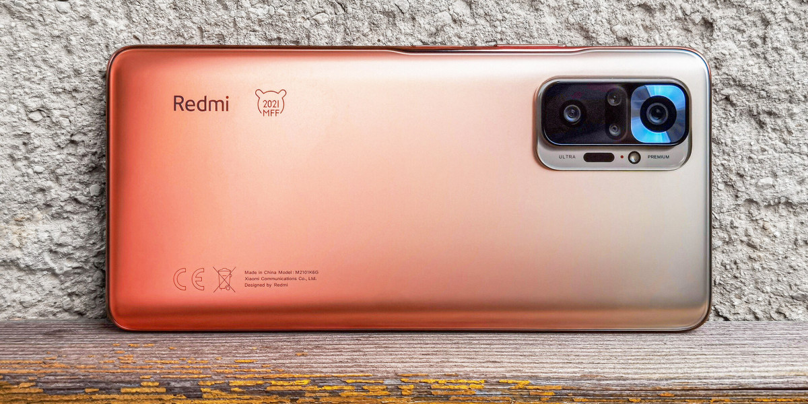

Redmi Note 10 Pro - majdnem minden stimmel

Topkamerával és csúcskijelzővel villant a Redmi, de nem minden arany, ami fénylik.
Írta: Bone123
2021-04-28 13:00
Külső, kijelző, készülékvédelem
Az okostelefonos műfaj a hajlítható különlegességeken túl sokkoló újdonságokat már nem tartogat, ám csak azért is érdemes a csúcstechnológiák előretöréséért szurkolni, hogy pár év múlva kikössenek a töredékáron operáló középkategóriában, ahol a Xiaominak akkora termékpalettája van, hogy egy kamiont meg lehetne tölteni vele. 80 ezer forintra esve a Poco X3 NFC például 120 Hz-es IPS panelt és remek kameraszettet kínál, 130 környékére várva a Poco F3 pedig AMOLED-re és csúcshardverre vált – a kettő között aztán magas képfrissítéssel, sokrétű lencserendszerrel, extrákkal és gyorstöltővel egymás hegyén-hátán kapaszkodnak figyelemért a különféle ajánlatok (Redmi Note 10 Pro, Mi 11 Lite 4G, Mi 10T Lite 5G).
[+]
Mindez a választás szempontjából remek, viszont csúszott már szoftverhiba a gépezetbe pont a kismillió telefonra szétosztott figyelem miatt, úgyhogy némi tisztázás ráférne a felső-középkategóriára, ahol csak Snapdragon 732G-s mobilból három figyel a polcokon. Az X3 NFC az árra, a Mi 11 Lite a csúcsszériát idéző küllemre és a könnyű hordozásra, a Note 10 Pro pedig 108 megapixeles hátlapi főkamerájára gyúr, mert igen: elérte a 120 ezres árszintet a megapixel döbbenet, és akkor van még másik négy optika az itt látható, Mi Fan Festival különkiadású házon szétszórva. Más kérdés, hogy épp a hátlapi szett rondít bele a telefon esztétikájába és egyensúlyába, amitől az billeg az asztallapon, elöl a 16 megapixeles szelfilyuk mindenesetre apró, és hatalmas, 6,67”-es Super AMOLED panel veszi körbe.
| Kijelző-teszt | |||||
|---|---|---|---|---|---|
| Mérés | Redmi Note 10 Pro | Xiaomi Mi 11 Lite 4G | OnePlus Nord | Xiaomi Mi 10T Lite | Samsung Galaxy A52 |
| Képátló | 6,67 hüvelyk | 6,55 hüvelyk | 6,44 hüvelyk | 6,67 hüvelyk | 6,50 hüvelyk |
| Felbontás | 1080 x 2400 | 1080 x 2400 | 1080 x 2400 | 1080 x 2400 | 1080 x 2400 |
| Technológia | AMOLED | AMOLED | Fluid AMOLED | IPS LCD | Super AMOLED |
| Képfrissítés | 120 Hz | 90 Hz | 90 Hz | 120 Hz | 90 Hz |
| Fehér képernyő | 441 / 1061 nit | 475 / 795 nit | 583 / 610 nit | 534 nit | 441 / 920 nit |
| Fehér képernyő (min.) | 2,5 nit | 1,9 nit | 3,2 nit | 1,9 nit | 1,6 nit |
| Fekete fényerő | 0 nit | 0 nit | 0 nit | 0,29 nit | 0 nit |
| Kontrasztarány | végtelen | végtelen | végtelen | 1841:1 | végtelen |
| Színhőmérséklet | 7520 / 6508 K + kézi | 7320 K + kézi | 7321 / 6756 K + kézi | 7717 K + kézi | 7180 / 6661 K + kézi |
Ne köntörfalazzuk: abszolút csúcskategóriás megjelenítőt kapunk 1080 x 2400 tűéles pixelen, mínusz a nem bele, hanem az oldalra költözött, de villámgyors ujjlenyomat-olvasó. Megvan az 1000 nit feletti napfény alatti fénysűrűség a tökéletes láthatósághoz, az általában makulátlan 120 Hz-es képfrissítés, a kitűnő betekintési szögek, a kirobbanó színek egy sor kalibrációval és sötét témával, a HDR10 támogatás és a perfekt érintésérzékelés. Innentől kezdve pedig nehezebb a mobil esetleges gyenge pontjain fogást találni, hiszen mindig visszatéved a tekintet a készülék legfőbb erősségére. A kevés káva ellenére fénymérő, közelségérzékelő és beszédhangszóró odafért erre az oldalra, és bár értesítő LED nem, elegánsan villan fel a panel két széle, ha közlendője van.
[+]
A műanyag ház mondjuk kifejezetten csúszós lett, úgyhogy érdemes a mellékelt tokot ráöltöztetni, amitől persze a 164 x 76,5 x 8,1 milliméteres és 193 grammos, amúgy is kétkezes jószág még terebélyesebb lesz, a fogás viszont stabilabb. Az összeszerelés makulátlan, a megjelenítőt Gorilla Glass 5 üveglap védi és IP53 alapon némi por- és csepp elleni vizsga is megvan, persze beázásra nem vonatkozik a jótállás. Kifejezetten előnyére válik a telefonnak a különkiadás üde, tavaszias festése, de jól mutat a szürke, hagyományos variáció is, a keskeny oldalélek pedig nem nélkülöznek egyetlen fontos terepelemet sem.
[+]
Alulra mikrofon, hangszóró és USB-C port került, a dobozban mellékelt kábellel és 33 wattos gyorstöltővel (jó reggelt, Apple, Samsung, Nokia). Felülre újabb mikrofon, sztereó hangzást biztosító második hangszóró, infra és jack kimenet (jó reggelt, majd’ minden csúcskészülék). Jobbra még pont elérhető hangerőszabályzó és bekapcsoló ujjlenyomat-olvasóval, balra végül a csomagolt SIM-tűvel kitolható, tripla tálca, amire két nanoSIM és egy microSD egyszerre jegyet válthat (jó reggelt, sok rivális). A doboz a Xiaomi.hu-tól jutott el hozzánk.
[+]
Ha az 5020 mAh-n gigantikus telepet is hozzáveszem, csak a Qi töltés, az elithardver és a topkategóriás kameraszett hiányzik, hogy a Note 10 Prót csúcsmobilnak hívjuk, cserébe sokkal olcsóbb egy Mi 11 Ultránál, kellő extrával, hogy az ár/érték verseny koronájára fájjon a foga. Oké: ez a modell 5G modemet nem kapott, és a Poco F3 minimális felárral ezt is elhozza, A két 2,3 GHz-es és hat 1,8 GHz-es Kryo 470 processzormagot bevető, 8 nm-es Snapdragon 732G mindenesetre tisztesen helytáll, és egy-egy váratlan döccenést vagy az Asphalt 9-szintű játékokat leszámítva az Adreno 618 GPU-val folyamatos és gördülékeny működés is megvan.
| Teljesítmény-teszt | ||||||
|---|---|---|---|---|---|---|
| Benchmark | Redmi Note 10 Pro | Xiaomi Mi 11 Lite 4G | OnePlus Nord | Xiaomi Mi 10T | Nokia 7.2 | Xiaomi Mi 10T Lite |
| Rendszerchip | Snapdragon 732G | Snapdragon 732G | Snapdragon 765G | Snapdragon 865 | Snapdragon 660 | Snapdragon 750G |
| AnTuTu Bench. 8.x | 284177 pont | 289251 pont | 329345 pont | 585190 pont | 173294 pont | 338831 pont |
| Geekbench 5 (single/multi) | 547 / 1766 pont | 566 / 1802 pont | 602 / 1910 pont | 908 / 3343 pont | 334 / 1445 pont | 660 / 2025 pont |
| GFXBench Car Chase onscreen | 15 fps | 17 fps | 19 fps | 42 fps | 8,1 fps | 16 fps |
| GFXBench Car Chase offscreen | 18 fps | 19 fps | 21 fps | 51 fps | 8,9 fps | 19 fps |
| GFXBench Man. onscreen | 36 fps | 41 fps | 49 fps | 50 fps | 29 fps | 39 fps |
| GFXBench Man. offscreen | 42 fps | 45 fps | 53 fps | 125 fps | 22 fps | 46 fps |
| AndroBench Sequential Read | 508,08 MB/s | 511,13 MB/s | 967,3 MB/s | 1618,82 MB/s | 278,05 MB/s | 962,15 MB/s |
| AndroBench Sequential Write | 267,01 MB/s | 258,55 MB/s | 473,90 MB/s | 720,67 MB/s | 168,91 MB/s | 474,94 MB/s |
Azért nincs ok a panaszra: az előbbi játék korlátozott fps-e ellenére rendben játszható, egy PUBG vagy Real Racing 3 folyamatosan fut, az alkalmazások pedig pillanatok alatt betöltenek, lévén alsó hangon 128 GB-os UFS 2.2 tároló jár 6 GB RAM mellé, míg az itt mutogatott változat 8 GB RAM-ot vet be. Az Android 11-re húzott MIUI 12-ről errefelé mindent leírtunk, a lényeg: remekül optimalizált, letisztult, szépen testreszabható a felület, jól működő gesztusvezérléssel, sötét móddal és sokrétű paraméterezéssel. Megvan a távirányító (csak nem programozható), minden telefonos és üzenetküldő funkció, egy rakás Xiaomi alkalmazás és szolgáltatás, és persze a Google teljes felhozatala, naprakész biztonsági frissítésekkel és többéves MIUI támogatás ígéretével – lapozhatunk is a kamerákra.
A cikk még nem ért véget, kérlek, lapozz!